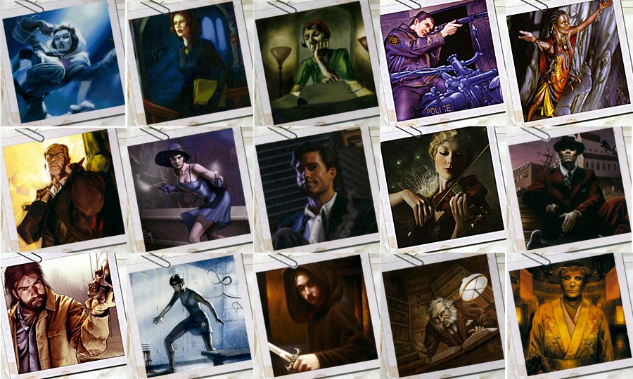

Emoverse

Links
Overview:
EmoVerse is an Augmented Reality (AR) application designed to promote emotional well-being by enabling users to externalize, share, and interact with emotions in a virtual space. Targeted at addressing academic stress among university students, EmoVerse leverages AR technology to foster asynchronous emotional sharing and create a supportive community.
Project Highlights:
- Conducted a user study that demonstrated reduced stress, anxiety, and negative moods among participants after using EmoVerse.
- Designed a prototype emphasizing personalized AR emotions, interactive support threads, and customizable user settings.
- Received qualitative feedback highlighting the importance of descriptive text, the emotional impact of supportive messages, and the novelty of AR-based emotional sharing.
Key Features:
- Emotion Externalization: Users create AR objects representing their emotions, paired with descriptive text to provide context.
- Interactive Emotion Sharing: Emotions can be placed in the AR environment, where other users can interact with them through actions like touching or poking.
- Community Support: Responses to emotions are logged as threads, forming a collaborative emotional journey.
- Asynchronous Communication: Facilitates delayed yet meaningful emotional exchanges, making support accessible at any time.
Tech Stack:
- Platform: Augmented Reality using tools like Luma.
- Prototype Design: Figma for user interface design and prototyping.
- Backend and User Study Tools: Email-based wizard-of-oz setup for testing interactions.
Applications:
- Aimed at promoting mental health among students through reflective and interactive emotional sharing.
- Potential applications in therapeutic settings, such as enhancing accessibility to mental health support and creating immersive environments for self-reflection.